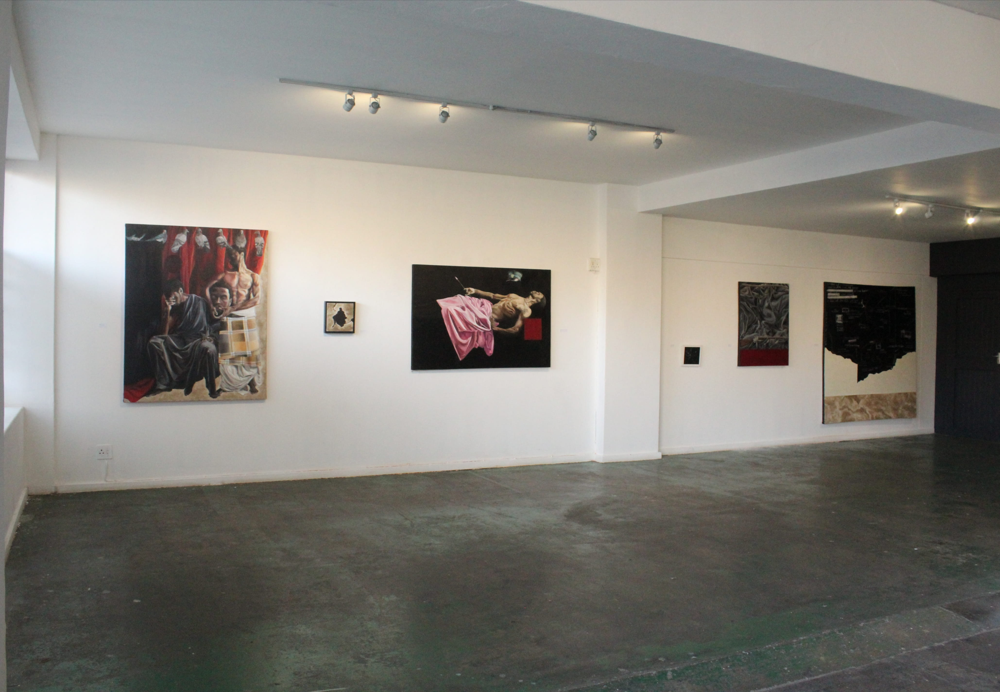
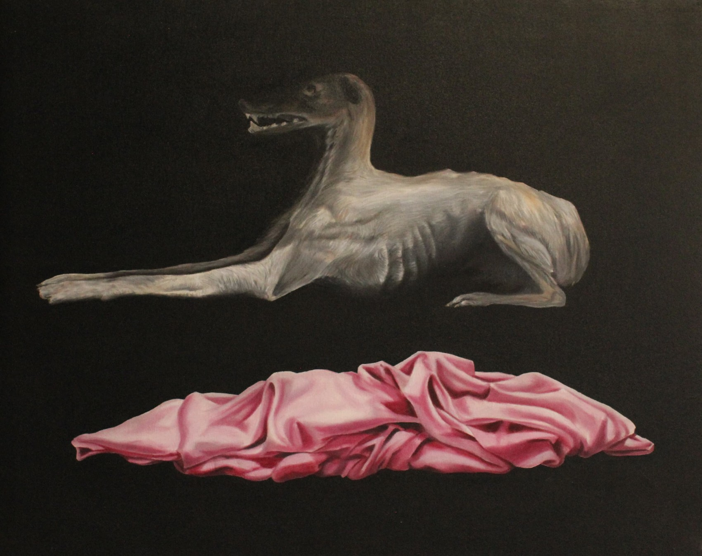
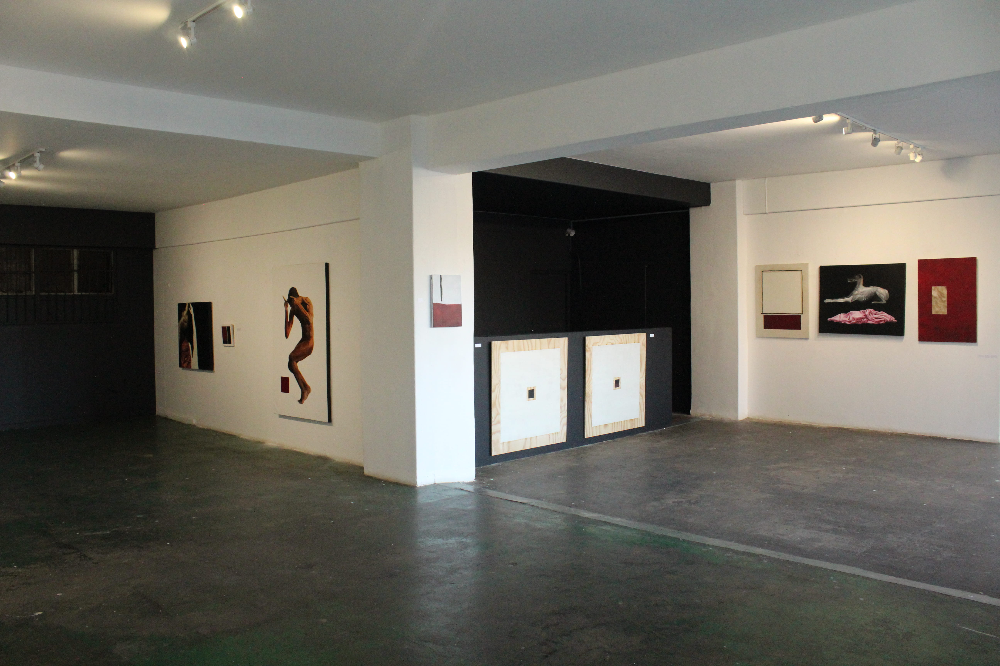
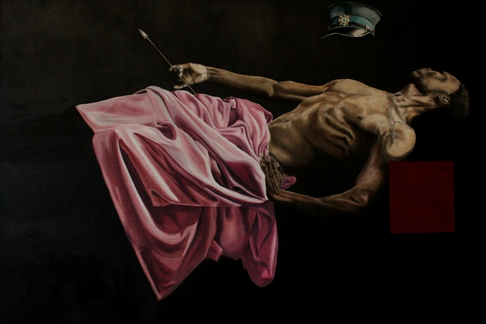

Feast of Flesh and Prayer
Ellis House, Johannesburg, 31 May - 15 June 2025
Recently, I’ve begun to pray again. I couldn’t say to whom, I couldn’t entirely say why. I start my prayers with a greeting to forces outside of myself, recognizing the presences and absences that define that moment between self and not self. Sometimes I ask for things, others I seek for something nestling between comfort and affirmation. Sometimes I sit with the silence of closed palms and shut eyes, I sit with the humility of not particularly understanding why I’m doing it, I sit with the surrender. I’m yet unsure what it does for me, but by the time I say Amen it isn’t very long before I open prayer again.

Installation View 1
The hope for exhibting this work, is for it to be a meditation on surrender as an element of hope. Embedded, encoded and rigorously worked into each of the works displayed here, is death. A death felt in the experience of lifelessness in the ancestral home; the death that is and surrounds imprisonment; death felt in powerlessness to influence the institutions that determine life standing; death felt in supreme despair and fear; death felt in utter lack of personal agencies. Spiritual Death, Social Death, confronted and soothed through the salving of death wounds with limestone – as did my ancestors eMacacuma in rituals of passing through un-life. Salving death here does not imply revival nor life, but a kind of socio-spiritual undeath. A death within which movement still lingers, where surrender becomes hope, where hope is alone is enough because it has to be.
Presently, Feast of Flesh and Prayer is a gathering of interconnected ideas exploring what could be called an existential pause, a moment to confront and process the forms of death that saturate life from a postcolonial, existential and phenomenological perspective. The show explores death as a metaphysical disconnection from ‘the land’, as a historical severance from the traditions of my people and as my situation within, and irrevocable binds to a Euro-Centre (Johannesburg) – whose wealth builds upon the extraction of labor and spirit from my ancestral home in The Eastern Cape. The focus of these works is not the moment of “death” or severance from that which gives spirit, but the expanded threads of socio-spiritual death that hold space within my own life as a result of those deaths. This is the examination of a continuous metaphysical death, it is a recognition of the direness of some of the ways it as manifested in my personal life. The materiality of these works, their very existence, is itself a prayer, a salve for death, an amen shot into meta-reality to substantiate a radical will to continuity, to life and to love beyond death.
In these works, bodies and posture convey deep and sensuous emotive extremity, tightened at the presence of a profound tension just beneath the skin, coiled at the danger, fear and loss that flank them. Soil and limestone meet canvas and wood to create conversation with the history of painting, the landscape, surveillance and demarcation as power. The real topographies of my ancestral home in the Eastern Cape are referenced in the creation of imaginary aerial-view maps upon which to meditate on the histories that contextualize my personal postcoloniality and the complexity it creates in navigating home and a connection to the lands and rivers which grounded my ancestors’ spirituality. Delicately painted moments that capture the aesthetic appeal of carefully rendered skin and intricately captured fabric are met across abstract voids and color fields by vignettes of violence, institutive oppression and revulsion.

Vumba LoMgodoy, 2025

View 2
View 3

Sickness Unto Death In The Bowel Of Dog Heaven, 2025